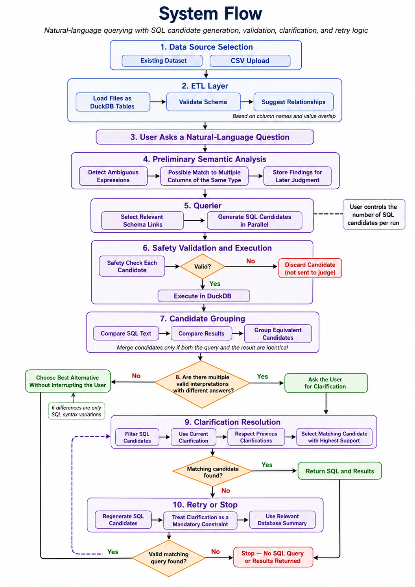

Interactive Natural-Language Database Exploration
Query CSV-based databases with LLM-generated SQL, schema context, and ambiguity clarification.
DB Whisperer allows users to explore CSV-based databases using natural language. The system loads data into DuckDB, generates read-only SQL through an LLM-based workflow, detects ambiguous requests, and displays query results through a Streamlit interface.
This project was developed as part of the Software Engineering in the Age of AI seminar. The team investigated whether explicit ambiguity detection and focused clarification improve natural-language database querying.
Team Members
Yotam Katz
Tali Ratner
Liran Becher
The Problem We Chose to Solve
Research Question
"To what extent can an LLM-based natural-language-to-SQL system help non-technical users explore multi-table, multi-column databases while reducing misinterpretation through explicit ambiguity detection and clarification?"
Expected Artifact
An easy-to-use web application where users upload CSV tables and ask questions about their data. The system either returns a validated SQL result table or asks one targeted question when the available evidence supports multiple plausible interpretations.
Why This Is Software Engineering
The project integrates ingestion, schema discovery, LLM-based SQL generation, validation, execution, ambiguity detection, and a user interface. Making these components safe, testable, transparent, and usable required explicit architectural and interaction decisions.
Our Source Papers
CODEXGRAPH: Bridging Large Language Models and Code Repositories via Code Graph Databases
CODEXGRAPH connects LLM agents to graph databases extracted from code repositories. Instead of relying only on similarity search or task-specific tools, the agent constructs graph queries for structure-aware retrieval and navigation. Across CrossCodeEval, SWE-bench, EvoCodeBench, and five practical applications, the approach demonstrated competitive performance and broad applicability.
Contribution to our project: It reinforced our decision to give the LLM structured schema metadata and discovered table relationships instead of treating uploaded tables as unstructured text. We applied the same principle of separating structured retrieval context from the model's final generation task.
ClarifyGPT: Empowering LLM-based Code Generation with Intention Clarification
ClarifyGPT detects ambiguous requirements through code-consistency checks, generates a targeted clarification, refines the requirement with the user's answer, and then generates code. Its human evaluation increased GPT-4 Pass@1 on MBPP-sanitized from 70.96% to 80.80%; larger simulated-user evaluations also improved GPT-4 and ChatGPT averages across four benchmarks.
Contribution to our project: The paper motivated selective clarification and the use of multiple generated outputs as evidence of an intent gap. DB Whisperer adapts this idea by comparing executed SQL/results, combining them with grounded semantic evidence, and requiring the final query to comply with the user's answer.
The System's Structure and Workflow
DB Whisperer is organized around CSV ingestion, schema analysis, SQL generation, ambiguity detection, and result display.
{kind=link}

1
CSV Input
The user provides one or more CSV files to explore.
2
Ingestion and Schema Discovery
Each CSV becomes a DuckDB table. The ETL layer extracts metadata and proposes relationships using naming hints confirmed by value overlap.
3
User Question
The user asks a natural-language question about the data.
4
Candidate Generation
Semantic intent is analyzed, then the Querier generates and executes several read-only SQL candidates in parallel using selected schema context.
5
Unified Ambiguity Decision
A judge compares successful SQL/results and supporting semantic evidence, discards implausible differences, and selects at most one two-option clarification.
6
Verified Result or Clarification
The application returns a result or applies the user's answer as a binding constraint. A result that cannot be verified against that answer is withheld.
Technologies
- Python for the implementation.
- Streamlit for the user interface.
- DuckDB for CSV-based analytical querying.
- OpenRouter for LLM access.
- SQLGlot and DuckDB validation for read-only SQL safety.
- Requests and pytz as supporting dependencies.
Architecture and Safety Boundaries
- The GUI delegates workflow decisions to the application service.
- The ETL layer alone creates tables and discovers relationships.
- The Querier alone builds prompts, validates SQL, and executes queries.
- The ambiguity layer judges executed alternatives but does not generate or run SQL.
- Only one SELECT statement is accepted; writes and external file or network scans are rejected.
Development Process and Human-in-the-Loop Engineering
The system and its evaluation changed through implementation, observed failures, and deliberate team review.
1. End-to-End Foundation
We first separated CSV ingestion, schema-aware prompting, safe SQL execution, ambiguity judgment, and the Streamlit interface into testable components.
2. Relational Data
Single-CSV support expanded to multiple tables. We added relationship discovery, connected schema context, robust CSV fallbacks, and visible relationship metadata.
3. Ambiguity Refinement
We moved from join-route multiplicity to a unified decision based on plausible executed alternatives and grounded semantic intent, because graph differences were not always user-intent differences.
4. Evidence and Evaluation
Observed failures led to binding clarification compliance, fail-closed behavior, four isolated benchmark arms, repeated runs, and reviewable case-level evidence.
Key dilemmas and decisions
Candidate diversity vs. model outliers
Different SQL outputs can reveal real ambiguity, but one unusual output is not automatically a valid interpretation. We kept support counts as confidence and added a plausibility check instead of using hard majority voting, which could erase a legitimate minority interpretation.
Early clarification vs. unbiased generation
Letting semantic findings steer the first SQL batch could make every candidate repeat the same interpretation. We therefore keep initial generation blind to those findings, then use them as supporting evidence after execution. Answered clarifications may pin the required schema tables.
Best effort vs. user-aligned output
An executable query may still ignore the user's clarification. We chose to verify compliance, retry once with binding instructions, and withhold the result if alignment remains unproven rather than displaying a convenient but potentially misleading answer.
Evaluation and Results
Evaluation V3 compared four system variants on a fixed MIMIC-III test set and retained every SQL result, clarification sequence, and scoring decision for review.
Final corrected V3 result · Full System
76.54/100
Weighted composite score
69.52%pass rate
83.53%semantic correctness
+32.01composite points over Baseline
+21.90 pppass-rate gain over Baseline
How the test worked
1
Ask 22 questions
The set included clear, ambiguous, ordinary, comparative, and unsafe requests.
2
Compare 4 versions
Each version switched specific ambiguity features on or off.
3
Repeat 5 times
LLM answers can vary, so every question was tried more than once.
4
Check the answer
Automatic rules compared each result with a known-good database result.
Results at a glance
| System variant | Composite | Pass rate |
|---|---|---|
| BaselineProduces one answer without an ambiguity check. | 44.53 | 47.62% |
| Candidate OnlyTries three answers and compares the successful results. | 45.62 | 47.62% |
| Semantic OnlyChecks whether vague wording could point to different database fields. | 67.43 | 60.95% |
| Full SystemCombines the three-answer comparison with the semantic check. | 76.54 | 69.52% |
The four evaluation arms were retained so we could distinguish which design decision caused each gain, rather than crediting the full pipeline as a black box.
Evaluation evolution: the development team in the loop
Benchmark V3 was not only a new test run. It records how our interpretation of a fair evaluation changed as the system evolved, and where human engineering judgment was required.
Dilemma: what counts as ambiguity?
V2 treated multiple schema-graph join paths as ambiguity. In practice, alternate routes did not always represent different user intentions. We changed V3 to evaluate the mechanisms used by the final system: executed candidate differences and validated semantic-column alternatives.
Dilemma: correct intent or exact formatting?
Early rules could reject equivalent results because of aliases, extra context columns, duration formats, ordering, or ties. We reviewed these failures and revised the scorer to prioritize the requested concepts and values, while measuring efficiency separately.
Human review and accountability
The team inspected case-level evidence, challenged misleading scores, documented exclusions, and approved corrected reports against frozen hashes. The final correction rescored saved runs without new model calls, keeping the original campaign intact and the decision trail auditable.
Conclusions and Future Work
What the completed artifact demonstrates, where it remains limited, and what should come next.
Main Conclusion
DB Whisperer demonstrates an accessible, transparent end-to-end NL-to-SQL workflow for multi-table CSV data. In the fixed V3 evaluation, explicit ambiguity handling improved both the pass rate and composite score over direct SQL generation.
What We Learned
Ambiguity is a property of plausible user intentions, not merely different SQL syntax or schema paths. Executed evidence is more useful than raw generations, clarification answers must affect final acceptance, and modular boundaries let us revise one decision mechanism without rebuilding the whole application.
Advantages
- Natural-language access for non-technical users.
- Multi-table CSV ingestion and relationship discovery.
- Targeted clarification instead of silent guessing.
- Visible SQL, results, schema context, and conversation history.
- Modular components and conservative read-only execution.
Disadvantages and Limitations
- Several model calls increase latency, cost, and variability.
- Discovered relationships are evidence, not guaranteed database constraints.
- Clarification and SQL quality still depend on the selected model.
- V3 uses one frozen clinical dataset and is not a substitute for a real-user study.
- Safety and unsuccessful clarification recovery require further improvement.
Future Work
The next priorities are evaluation with additional domains and non-technical users, stronger safety behavior, better recovery when no candidate satisfies a clarification, improved semantic intent detection, clearer privacy controls for prompt logs, and optional human-confirmation checkpoints for high-impact queries. Entity resolution and semantic pruning of relationship evidence are also natural extensions for noisier real-world databases.
User Manual
Basic usage instructions for the live App and local execution.
Requirements and Dependencies
- A modern web browser for the hosted application.
- For local use: Python, Git, and the packages in
requirements.txt. - An OpenRouter API key, unless the hosted default model is available.
- One or more CSV files with header rows, or one of the bundled demonstration datasets.
Using the Live App
- Open the application and select a bundled dataset or upload related CSV files.
- Review the detected tables, columns, previews, and relationships.
- Choose an OpenRouter model and enter an API key when required.
- Ask a question about the loaded data in natural language.
- If a clarification appears, select the interpretation that matches your intent.
- Review the result table and the SQL that produced it.
Running Locally
From the repository root, install the pinned dependency ranges and start Streamlit:
python -m pip install -r requirements.txt streamlit run app.py
Set OPENROUTER_API_KEY or enter the key in the interface. The optional
OPENROUTER_MODEL variable changes the default model.
Automatic Processing
- Load CSVs into a read-only DuckDB workflow and inspect their schemas.
- Discover likely relationships and select relevant schema context.
- Generate, validate, and execute SQL candidates.
- Judge whether their plausible meanings require clarification.
- Return a verified result or apply the selected clarification and try again.
Inputs and Outputs
- Inputs: CSV tables, a natural-language question, model configuration, and any clarification answer.
- Outputs: a result table with generated SQL, or one targeted two-option clarification.
- Failure output: a clear error when ingestion, generation, validation, execution, or clarification compliance fails.
Repository Structure
app.py Streamlit entry point src/db_whisperer/ application/ Workflow orchestration etler/ CSV ingestion and relationships querier/ Prompting, SQL validation, execution ambiguity/ Intent and candidate evaluation gui/ Streamlit presentation contracts.py Shared data contracts benchmark_v3/ Current controlled evaluation tests/ Automated test suite docs/ Evaluation and design records
API keys are not saved by the application. Prompt logs may contain generated SQL, schema context, samples from uploaded data, model responses, and failure details; treat them as sensitive.
Materials and Downloads
Available project, research, presentation, and evaluation materials.
Project Repository
Source code and project files.
Open GitHubLive App
Streamlit application.
Open AppDB Whisperer Project Report
The complete project report covering the system, research process, and findings.
Open PDF (in Hebrew)Evaluation Overview
A concise explanation of the V3 method, comparison, findings, and limitations.
Open OverviewDetailed Evaluation Report
The complete four-arm evidence report with methodology, metrics, failure analysis, and case-level records.
Open ReportV3 Method Evolution
Why V2 no longer matched production and how the V3 suite, scoring, validation, and publication process evolved.
Open Method Notes